TORRES CARDINALES
Construcción y desarrollo de complejos habitacionales modernos en zonas urbanas estratégicas de Mendoza.
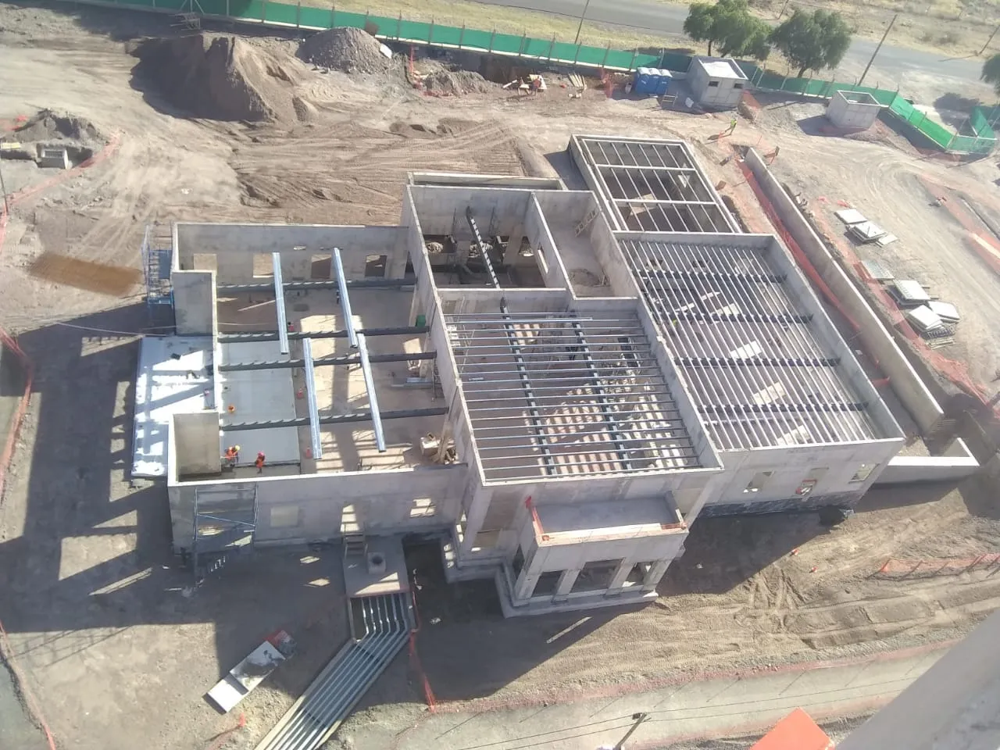
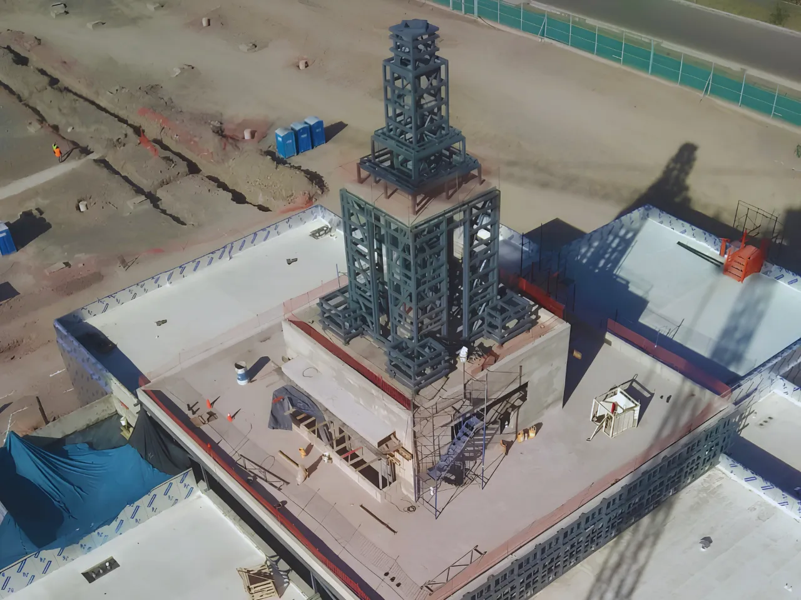

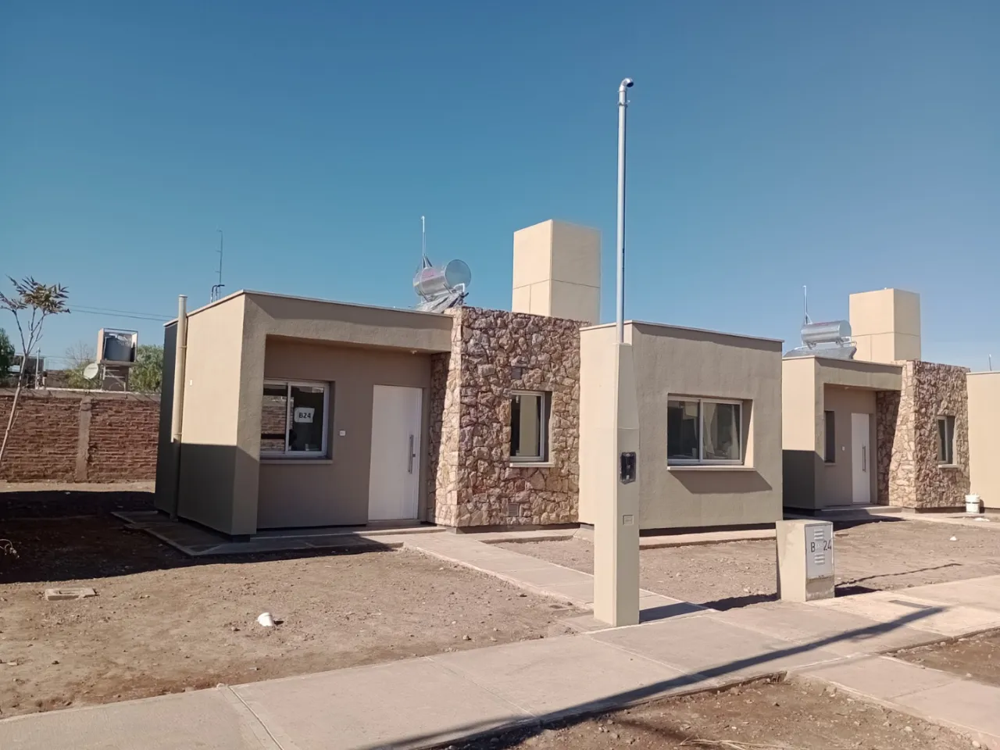
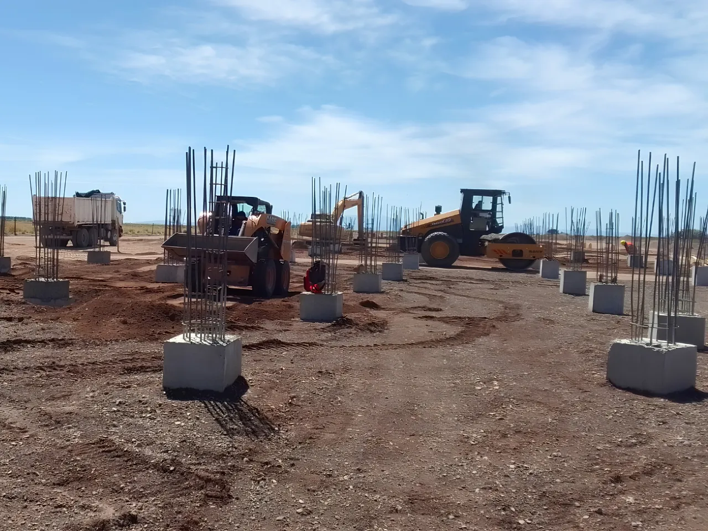
Construcción y desarrollo de complejos habitacionales modernos en zonas urbanas estratégicas de Mendoza.
Ejecución de detalles arquitectónicos de alta precisión y estructuras emblemáticas en Ciudad de Mendoza.
Remodelación integral del espacio público, obras de arquitectura y desarrollo de infraestructura clave para revitalizar este sector histórico de Godoy Cruz.
Planificación, movimiento de suelos e infraestructura básica para proyectos habitacionales integrales en Maipú.
Ingeniería sanitaria aplicada: piletas de oxidación y redes de recolección integral en Malargüe.
Soy un profesional de la construcción especializado en la ejecución y supervisión de obras civiles. A lo largo de mi carrera,busco siempre liderar equipos de trabajo lo mejor posible bajo condiciones exigentes, optimizando el uso de recursos en el terreno y asegurando que cada fase del proyecto cumpla estrictamente con los estándares de calidad y seguridad requeridos. Mi objetivo es aportar liderazgo, experiencia práctica y soluciones eficientes en cada frente de obra.
Con más de una década de trayectoria liderando proyectos de obra civil, me especializo en la coordinación integral de frentes de obra, garantizando la ejecución precisa de los proyectos en tiempo y forma. Mi enfoque combina una rigurosa supervisión técnica, una gestión eficiente de los recursos y el liderazgo constructivo de equipos de trabajo. Mi prioridad es transformar planos y especificaciones en estructuras seguras y de alta calidad, manteniendo siempre los más altos estándares de seguridad y optimización de materiales.
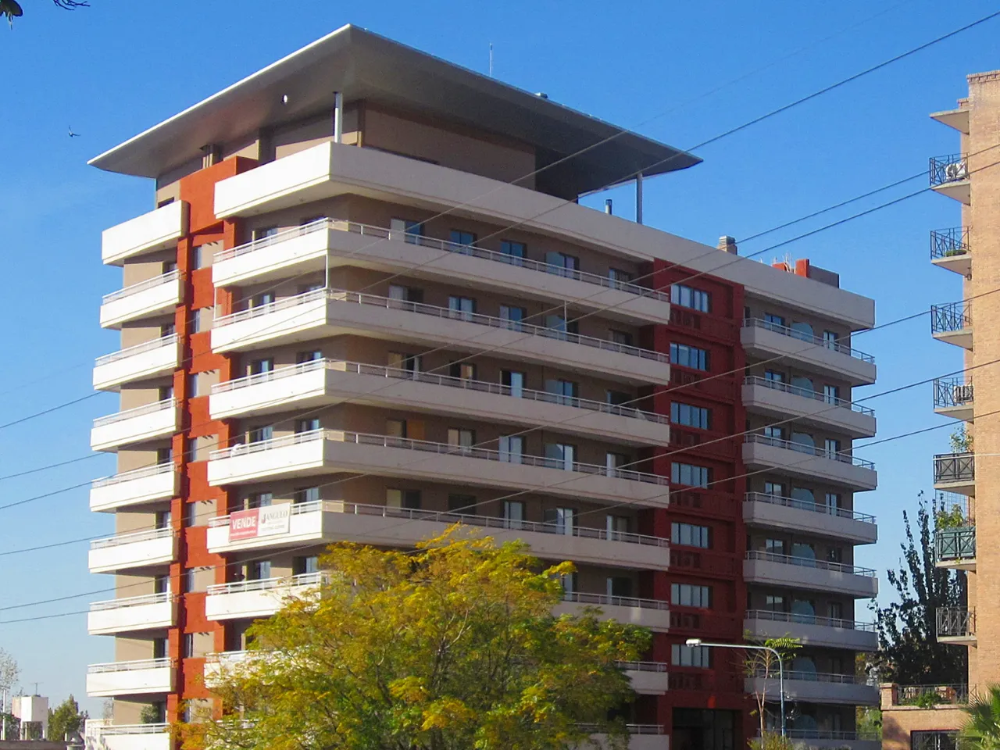
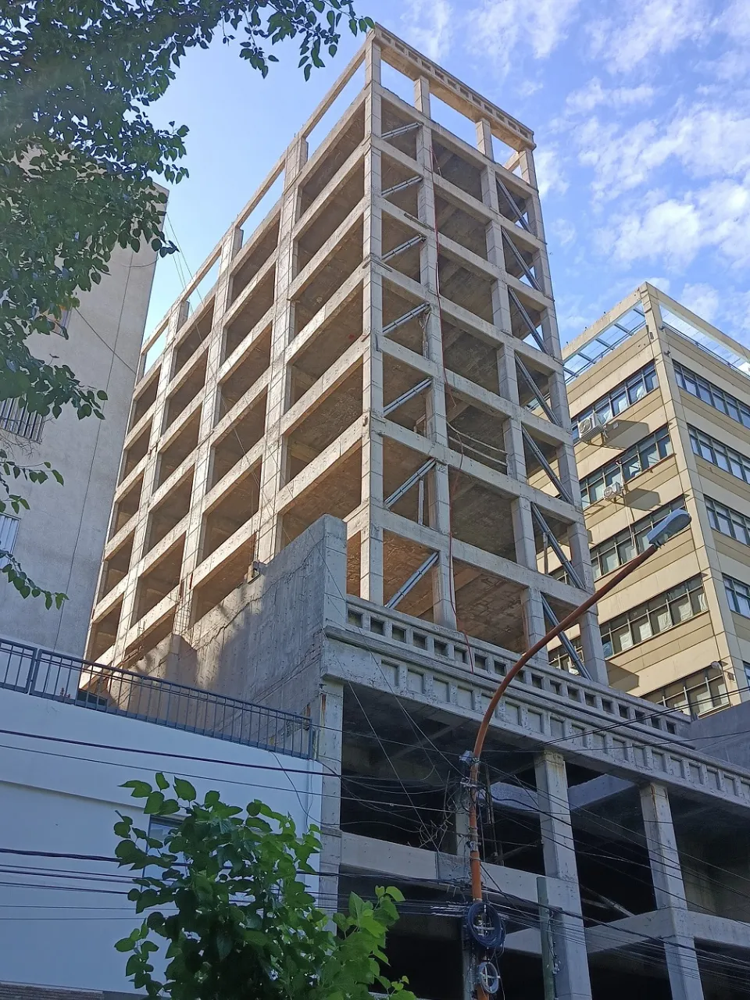
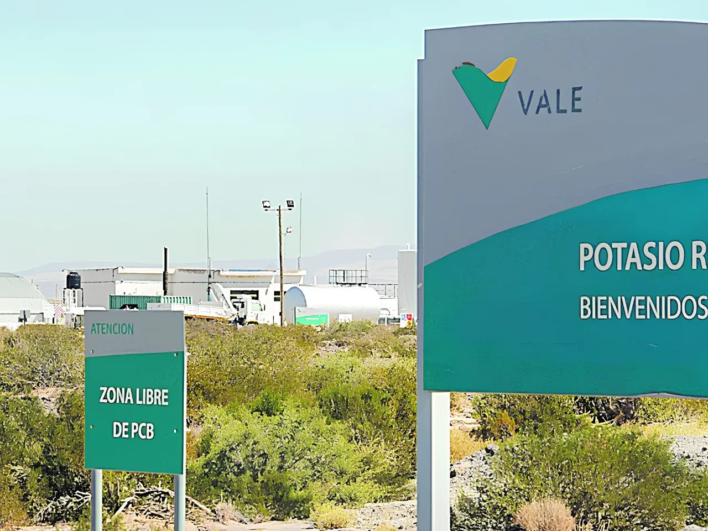
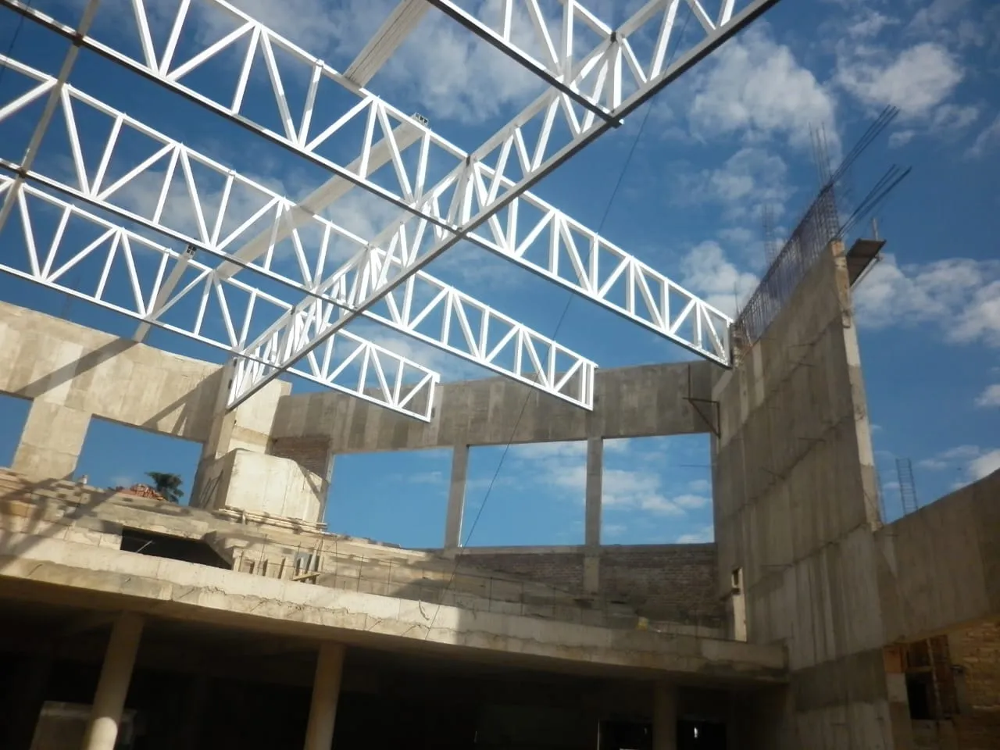
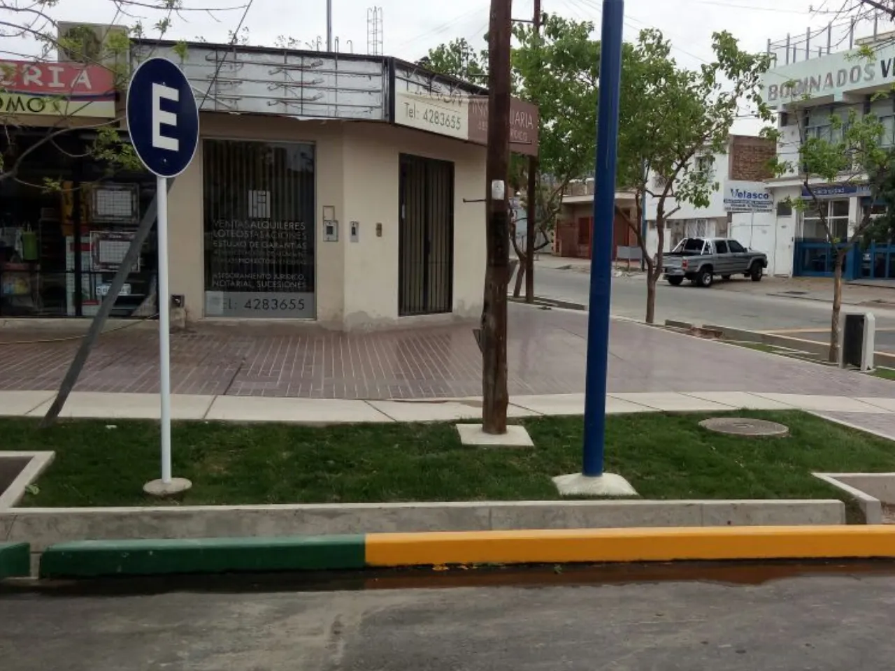
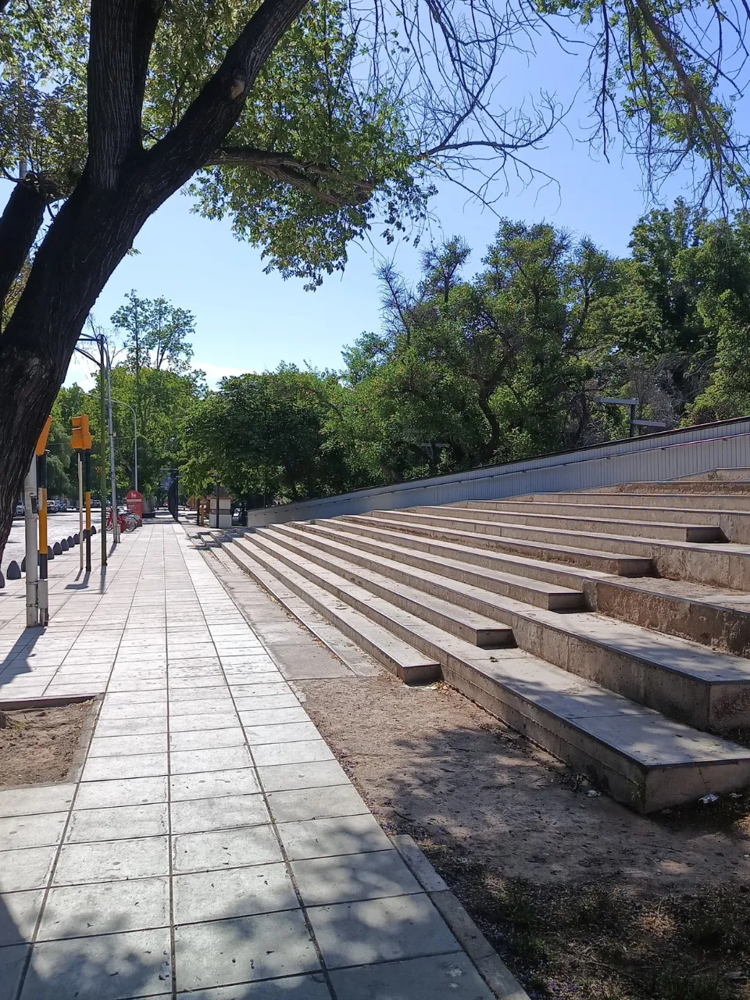
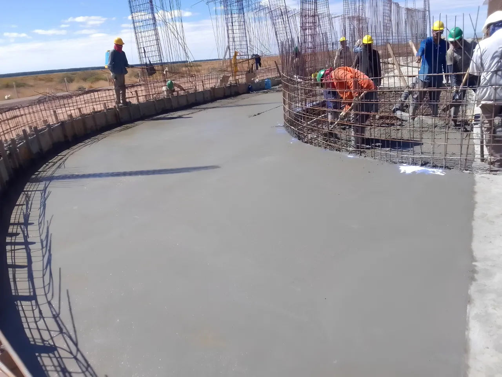